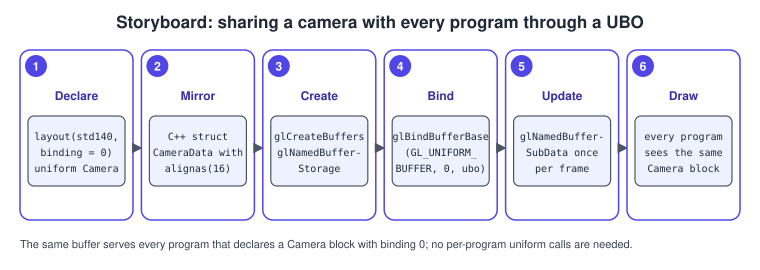
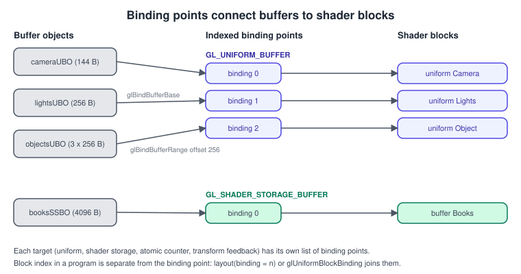
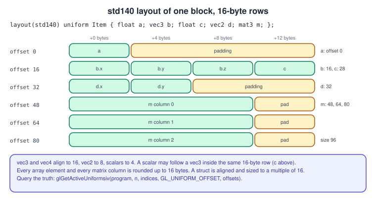
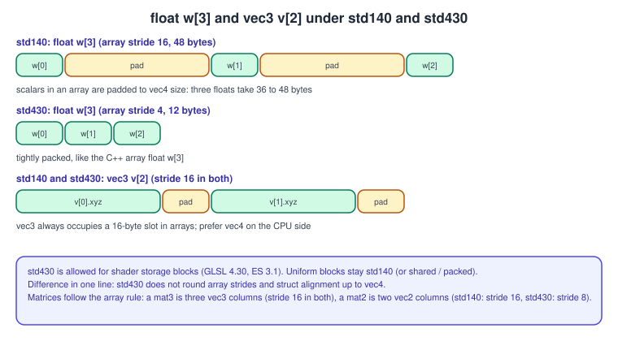

Uniforms, UBOs and SSBOs
|
This content was generated with the assistance of AI and should be verified against the official documentation before being relied on in production. |
Vertex attributes change per vertex; everything else a shader needs (the camera, the lamp, the material of a book, a table
of particles) arrives through uniforms, uniform buffer objects or shader storage buffer objects. They differ in who may
write them, how large they can be and how the bytes are laid out, and the layout rules are the single most common source of
"my shader reads garbage" bugs. This page explains the three mechanisms, the padding rules of the std140 and std430
layouts, how buffers are attached to shaders through binding points, and the barriers that make shader writes visible. The
buffer objects themselves are described in
Buffers and Vertex Specification and the shader syntax in
The OpenGL Shading Language (GLSL).
The facts were checked in November 2026. The versions documented are OpenGL 4.6 with GLSL 4.60 and OpenGL ES 3.2 with GLSL ES
3.20. Default-block uniforms exist in every version (OpenGL 2.0 and ES 2.0). Uniform buffers need OpenGL 3.1 or ES 3.0, and
the binding layout qualifier needs GLSL 4.20 (ES 3.1). Shader storage buffers and the std430 layout need OpenGL 4.3 or ES
3.1. macOS offers only OpenGL 4.1, so the Bookshelf GL baseline uses default uniforms and UBOs, and shows SSBOs as an optional
path for 4.3 and later. A general introduction to how the GPU reads these data classes is in
GPU Architecture Basics.
Choosing the mechanism
| Mechanism | Size | Access from shader | Version |
|---|---|---|---|
Default-block uniform |
small: a few hundred vectors per stage |
read-only |
GL 2.0, ES 2.0 |
Uniform buffer object |
at least 16 KiB per block, more on desktop (query |
read-only, usually fastest for shared constants |
GL 3.1, ES 3.0 |
Shader storage buffer object |
very large (query |
read and write, atomics |
GL 4.3, ES 3.1 |
Texture buffer ( |
large |
read-only, |
GL 3.1, ES 3.2 |
Guaranteed minimums are small; always query the real limits for the context you got (GL_MAX_VERTEX_UNIFORM_COMPONENTS,
GL_MAX_UNIFORM_BLOCK_SIZE, GL_MAX_UNIFORM_BUFFER_BINDINGS and the per-stage block counts). On OpenGL ES the guaranteed
number of SSBOs a vertex or fragment shader may use can be zero; ES 3.1 compute shaders always have them, so a vertex shader that
reads an SSBO must be checked with GL_MAX_VERTEX_SHADER_STORAGE_BLOCKS.
Default-block uniforms
A uniform declared outside a block lives in the default uniform block of the program and is set through the API.
uniform mat4 uViewProj;
uniform vec4 uTint = vec4(1.0); // GLSL initialiser, applies after link
uniform vec3 uLightPos[4]; // array: locations uLightPos[0] to uLightPos[3]
layout(location = 8) uniform float uTime; // explicit location: GLSL 4.30The API has a function family per type:
const GLint loc = glGetUniformLocation(program, "uTint"); // -1 if inactive
glUseProgram(program); // glUniform* affects the CURRENT program
glUniform4f(loc, 1.0f, 0.9f, 0.8f, 1.0f);
glUniformMatrix4fv(glGetUniformLocation(program, "uViewProj"), 1, GL_FALSE, glm::value_ptr(viewProj));
glUniform3fv(glGetUniformLocation(program, "uLightPos"), 4, &positions[0].x); // whole array
glUniform1i(glGetUniformLocation(program, "uCover"), 0); // sampler: texture unit index
glProgramUniform1f(program, glGetUniformLocation(program, "uTime"), t); // 4.1: no glUseProgram neededSource: OpenGL 4 reference: glUniform.
Facts that matter:
-
The current program receives
glUniform*.glProgramUniform*(OpenGL 4.1, ES 3.1,GL_ARB_separate_shader_objects) takes the program as a parameter and is the safer choice. -
Values persist inside the program object across
glUseProgramcalls, so a uniform that does not change need not be set again. They are reset to the GLSL initialiser (or zero) when the program is relinked. -
glUniformMatrix4fv(location, count, transpose, value)expects column-major data whentransposeisGL_FALSE, which is what GLM stores.GL_TRUEis only allowed from ES 3.0 on; in ES 2.0 it is an error. -
A uniform that does not influence the shader’s output is optimised away and its location is -1.
glUniform*with -1 does nothing and raises no error, which hides typos. -
Samplers are set to a texture unit index, not to a texture name. From GLSL 4.20 write
layout(binding = 0) uniform sampler2D uCover;and skip the call. -
Arrays are set with a count; to set element 2 alone, query the location of
"uLightPos[2]". -
Limits are expressed in components (
GL_MAX_VERTEX_UNIFORM_COMPONENTS, at least 1024 on desktop 4.6) or, in ES, vectors (GL_MAX_VERTEX_UNIFORM_VECTORS, at least 256 in ES 3.0;GL_MAX_FRAGMENT_UNIFORM_VECTORSat least 224).
Per-draw glUniform* calls are fine for a handful of values; they become the bottleneck when thousands of objects each need
a matrix and a colour, which is when UBOs take over.
Uniform buffer objects (UBO)
A uniform block groups several uniforms and takes its values from a buffer object bound to the GL_UNIFORM_BUFFER target.
Instead of one call per uniform you write the bytes of the whole block into a buffer once; the same buffer can serve every
program that declares a block of the same layout, and switching between buffers is one bind call.
The five steps in the Bookshelf, for a camera shared by all programs:

The pieces of the binding pipeline are drawn in the next figure. A buffer is attached to an indexed binding point of the
target (glBindBufferBase(GL_UNIFORM_BUFFER, 0, buffer)); a block of a program is attached to the same index (in the
shader with layout(binding = 0), or with glUniformBlockBinding(program, blockIndex, 0)). The two numbers meet at the binding
point; the buffer does not know the program and the program does not know the buffer.

A binding point may expose a range of a larger buffer: glBindBufferRange(target, index, buffer, offset, size). The offset
must be a multiple of GL_UNIFORM_BUFFER_OFFSET_ALIGNMENT (query it; it is commonly 256 bytes on desktop GPUs and smaller
elsewhere), which is why per-object data is stored with a padded stride instead of tightly. This is the usual replacement
for "dynamic uniform buffers" in other APIs.
Note the difference between the two bind functions: glBindBuffer(GL_UNIFORM_BUFFER, buffer) sets only the generic binding
point that buffer-editing calls use, while glBindBufferBase and glBindBufferRange set the indexed binding used by shaders (and
also the generic one). Forgetting the indexed bind is the classic "everything is zero" bug. See
Direct State Access for edit calls that never touch the generic binding.
std140 and std430 layouts
The GPU reads the block at byte offsets decided by a layout. Without a layout qualifier, the default is shared: the
implementation chooses the offsets, but identically in every program, and you must ask for them with
glGetActiveUniformsiv(..., GL_UNIFORM_OFFSET, ...). The qualifiers std140 and std430 instead use rules written in the
specification, so the C++ side can be computed in advance. Both are defined with a base alignment per type:
| Type | std140 alignment and size | std430 alignment and size |
|---|---|---|
|
4 and 4 |
4 and 4 |
|
8 and 8 |
8 and 8 |
|
16 and 12 |
16 and 12 |
|
16 and 16 |
16 and 16 |
array of scalars or vectors |
every element padded up to a multiple of 16 |
element size rounded to its own base alignment; |
|
stored as an array of C column vectors, each rounded up to 16 |
stored as an array of C column vectors; |
struct |
alignment and size rounded up to a multiple of 16 |
alignment of its largest member, size rounded to it |
Reading the rules by example: a vec3 aligns like a vec4 but only occupies 12 bytes, so a scalar that follows it can
share its 16-byte slot. The following block and its offsets are shown byte by byte in the figure.
layout(std140) uniform Item {
float a; // offset 0
vec3 b; // offset 16: vec3 aligns to 16
float c; // offset 28: fits in the unused 4 bytes after b
vec2 d; // offset 32: vec2 aligns to 8
mat3 m; // offsets 48, 64, 80: each column is padded to 16 bytes
}; // block size 96Source: Interface Block (GLSL)

Arrays show the difference between the two layouts:

Practical rules that avoid nearly all trouble:
-
Use
vec4andmat4in blocks; avoidvec3(put a scalar in its fourth component, likevec4 positionwith the radius inw) and avoid arrays offloatandvec2in std140. -
Order members from largest alignment to smallest, or pad them explicitly with named
float pad0;members so that the C++ struct and the GLSL block read the same. -
std430is only valid for shader storage blocks (GLSL 4.30). A uniform block staysstd140. -
Declare the block identically in every stage and program that uses it; the block name links the declaration to the API (the instance name, if any, is only for use in GLSL).
-
GLM matches the sizes:
glm::mat4is 64 bytes,glm::vec416 andglm::vec312 with an alignment of only 4, which is why aglm::vec3is not safe in a std140 struct withoutalignas(16)or an explicit pad; many projects simply useglm::vec4.
A complete UBO example: a shelf of coloured spines
The program draws five book spines as coloured rectangles. A Camera block (view, projection, time) is shared by the
program and written once per frame; an Object block per book (model matrix and colour) lives in a second buffer that is
bound by range for every draw call, with the stride padded to the alignment limit. It runs on OpenGL 4.1 core (macOS) and prints the
offsets the driver reports so that you can compare them with the C++ structs. It uses the ShaderProgram helper of
Shaders and Programs and the project layout of
Getting Started on Desktop.
#include <glad/gl.h>
#include <GLFW/glfw3.h>
#include <glm/glm.hpp>
#include <glm/gtc/matrix_transform.hpp>
#include <cstddef>
#include <cstdio>
#include <cstring>
#include <vector>
#include "shader_program.hpp"
// The C++ mirror of the two GLSL blocks. All members are vec4/mat4, so std140 needs no padding.
struct CameraData {
glm::mat4 view;
glm::mat4 proj;
glm::vec4 eyeTime; // xyz = eye position, w = time in seconds
};
struct ObjectData {
glm::mat4 model;
glm::vec4 color;
};
static_assert(sizeof(CameraData) == 144 && offsetof(CameraData, eyeTime) == 128);
static_assert(sizeof(ObjectData) == 80 && offsetof(ObjectData, color) == 64);
static const char* kVert = R"(#version 410 core
layout(std140) uniform Camera { mat4 uView; mat4 uProj; vec4 uEyeTime; };
layout(std140) uniform Object { mat4 uModel; vec4 uColor; };
const vec2 kCorner[4] = vec2[4](vec2(-0.5, -0.5), vec2(0.5, -0.5), vec2(-0.5, 0.5), vec2(0.5, 0.5));
void main() {
vec2 p = kCorner[gl_VertexID];
p.x += 0.06 * p.y * sin(uEyeTime.w * 2.0); // sway with time from the Camera block
gl_Position = uProj * uView * uModel * vec4(p, 0.0, 1.0);
}
)";
static const char* kFrag = R"(#version 410 core
layout(std140) uniform Object { mat4 uModel; vec4 uColor; };
out vec4 oColor;
void main() { oColor = uColor; }
)";
int main() {
if (!glfwInit()) return 1;
glfwWindowHint(GLFW_CONTEXT_VERSION_MAJOR, 4);
glfwWindowHint(GLFW_CONTEXT_VERSION_MINOR, 1);
glfwWindowHint(GLFW_OPENGL_PROFILE, GLFW_OPENGL_CORE_PROFILE);
glfwWindowHint(GLFW_OPENGL_FORWARD_COMPAT, GL_TRUE);
GLFWwindow* window = glfwCreateWindow(800, 600, "Bookshelf GL: UBOs", nullptr, nullptr);
if (!window) return 1;
glfwMakeContextCurrent(window);
glfwSwapInterval(1);
if (!gladLoadGL(glfwGetProcAddress)) return 1;
ShaderProgram program;
std::string error;
if (!program.build({{GL_VERTEX_SHADER, kVert}, {GL_FRAGMENT_SHADER, kFrag}}, error)) {
std::fprintf(stderr, "%s\n", error.c_str());
return 1;
}
// Join the blocks to binding points 0 and 1 (GLSL 4.10 has no layout(binding)).
const GLuint cameraIndex = glGetUniformBlockIndex(program.id(), "Camera");
const GLuint objectIndex = glGetUniformBlockIndex(program.id(), "Object");
glUniformBlockBinding(program.id(), cameraIndex, 0);
glUniformBlockBinding(program.id(), objectIndex, 1);
// Compare the C++ layout with what the driver chose.
GLint cameraSize = 0, eyeOffset = 0;
glGetActiveUniformBlockiv(program.id(), cameraIndex, GL_UNIFORM_BLOCK_DATA_SIZE, &cameraSize);
const GLchar* eyeName = "uEyeTime";
GLuint eyeIndex = 0;
glGetUniformIndices(program.id(), 1, &eyeName, &eyeIndex);
glGetActiveUniformsiv(program.id(), 1, &eyeIndex, GL_UNIFORM_OFFSET, &eyeOffset);
std::printf("Camera block: %d bytes, uEyeTime at %d (C++: %zu, %zu)\n", cameraSize, eyeOffset,
sizeof(CameraData), offsetof(CameraData, eyeTime));
// Per-object slices must start at multiples of the offset alignment.
GLint alignment = 0;
glGetIntegerv(GL_UNIFORM_BUFFER_OFFSET_ALIGNMENT, &alignment);
const GLsizeiptr stride = (static_cast<GLsizeiptr>(sizeof(ObjectData)) + alignment - 1) / alignment * alignment;
constexpr int kBooks = 5;
const glm::vec4 colors[kBooks] = {{0.65f, 0.15f, 0.12f, 1}, {0.15f, 0.35f, 0.60f, 1}, {0.20f, 0.50f, 0.25f, 1},
{0.75f, 0.60f, 0.20f, 1}, {0.45f, 0.25f, 0.55f, 1}};
std::vector<unsigned char> objectBytes(static_cast<size_t>(stride) * kBooks, 0);
for (int i = 0; i < kBooks; ++i) {
const float height = 1.6f + 0.15f * static_cast<float>(i % 3);
ObjectData data{};
data.model = glm::translate(glm::mat4(1.0f), glm::vec3(-1.2f + 0.6f * static_cast<float>(i), 0.0f, 0.0f)) *
glm::scale(glm::mat4(1.0f), glm::vec3(0.45f, height, 1.0f));
data.color = colors[i];
std::memcpy(objectBytes.data() + static_cast<size_t>(stride) * i, &data, sizeof data);
}
GLuint buffers[2] = {};
glGenBuffers(2, buffers);
glBindBuffer(GL_UNIFORM_BUFFER, buffers[0]);
glBufferData(GL_UNIFORM_BUFFER, sizeof(CameraData), nullptr, GL_DYNAMIC_DRAW);
glBindBuffer(GL_UNIFORM_BUFFER, buffers[1]);
glBufferData(GL_UNIFORM_BUFFER, static_cast<GLsizeiptr>(objectBytes.size()), objectBytes.data(), GL_STATIC_DRAW);
glBindBufferBase(GL_UNIFORM_BUFFER, 0, buffers[0]); // Camera at binding point 0
GLuint vao = 0;
glGenVertexArrays(1, &vao); // required in core, even with no attributes
glBindVertexArray(vao);
program.use();
while (!glfwWindowShouldClose(window)) {
glfwPollEvents();
int w = 0, h = 0;
glfwGetFramebufferSize(window, &w, &h);
glViewport(0, 0, w, h);
glClearColor(0.18f, 0.12f, 0.08f, 1.0f);
glClear(GL_COLOR_BUFFER_BIT);
CameraData camera{};
camera.view = glm::mat4(1.0f);
const float aspect = static_cast<float>(w) / static_cast<float>(h > 0 ? h : 1);
camera.proj = glm::ortho(-1.5f * aspect, 1.5f * aspect, -1.5f, 1.5f, -1.0f, 1.0f);
camera.eyeTime = glm::vec4(0.0f, 0.0f, 1.0f, static_cast<float>(glfwGetTime()));
glBindBuffer(GL_UNIFORM_BUFFER, buffers[0]);
glBufferSubData(GL_UNIFORM_BUFFER, 0, sizeof camera, &camera);
for (int i = 0; i < kBooks; ++i) {
glBindBufferRange(GL_UNIFORM_BUFFER, 1, buffers[1], stride * i, sizeof(ObjectData));
glDrawArrays(GL_TRIANGLE_STRIP, 0, 4);
}
glfwSwapBuffers(window);
}
glfwTerminate();
return 0;
}If the printed uEyeTime offset is 128 and
the block size 144, the C++ mirror and the GLSL block agree; otherwise one of the two declarations changed.
On a 4.2-or-later context you can drop both glUniformBlockBinding calls and write layout(std140, binding = 0) uniform Camera
and layout(std140, binding = 1) uniform Object in the shaders; glBindBufferBase and glBindBufferRange stay the same.
Shader storage buffer objects (SSBO)
A shader storage block is declared with buffer instead of uniform, is attached to the GL_SHADER_STORAGE_BUFFER
target and differs from a UBO in three ways: shaders may write it, its size limit is far larger than a UBO’s (query
GL_MAX_SHADER_STORAGE_BLOCK_SIZE), and its last member may be an unsized array whose length
is whatever buffer range you bound (books.length()). It also accepts std430, and atomic* functions on its members.
#version 430 core
struct Book {
vec2 position; // offset 0
vec2 size; // offset 8: std430 packs vec2 pairs tightly
vec4 color; // offset 16, struct size 32
};
layout(std430, binding = 0) readonly buffer Books { Book books[]; };
layout(std430, binding = 1) buffer Stats { uint fragmentsDrawn; };Attach buffers like UBOs, with glBindBufferBase(GL_SHADER_STORAGE_BUFFER, index, buffer) or glBindBufferRange; the offset
alignment is GL_SHADER_STORAGE_BUFFER_OFFSET_ALIGNMENT. Block-to-binding assignment from the API is
glShaderStorageBlockBinding (the counterpart of glUniformBlockBinding); layout(binding) does the same in the shader. The
memory qualifiers readonly, writeonly, coherent, volatile and restrict on a block or member tell the compiler
what it may cache.
Shader writes are not automatically visible. After a shader writes an SSBO, anything that reads it afterwards through
another path needs a glMemoryBarrier with the bit for that path: GL_SHADER_STORAGE_BARRIER_BIT for later shader reads,
GL_BUFFER_UPDATE_BARRIER_BIT for glGetBufferSubData, glCopyBufferSubData and mapped reads, GL_VERTEX_ATTRIB_ARRAY_BARRIER_BIT
when the buffer is then used as a vertex buffer, GL_COMMAND_BARRIER_BIT for indirect draw arguments. Barriers and
synchronisation are the subject of Sync, Queries and Transform Feedback;
the particle system in Compute Shaders uses SSBOs this way.
The second complete program reads book positions and colours from an SSBO with no vertex buffer (vertex pulling), draws all books in one instanced call and counts the fragments they cover with an atomic add. It needs a 4.3 context (it requests it and exits with a message where that is unavailable, as on macOS).
#include <glad/gl.h>
#include <GLFW/glfw3.h>
#include <glm/glm.hpp>
#include <cstdio>
#include <vector>
#include "shader_program.hpp"
struct alignas(16) Book {
glm::vec2 position; // NDC
glm::vec2 size;
glm::vec4 color;
};
static_assert(sizeof(Book) == 32, "must match the std430 struct in the shader");
static const char* kVert = R"(#version 430 core
struct Book { vec2 position; vec2 size; vec4 color; };
layout(std430, binding = 0) readonly buffer Books { Book books[]; };
out vec4 vColor;
void main() {
Book b = books[gl_InstanceID]; // instance i reads element i
vec2 corner = vec2(float(gl_VertexID & 1), float(gl_VertexID >> 1)); // 0,0 1,0 0,1 1,1
gl_Position = vec4(b.position + corner * b.size, 0.0, 1.0);
vColor = b.color;
}
)";
static const char* kFrag = R"(#version 430 core
layout(std430, binding = 1) buffer Stats { uint fragmentsDrawn; };
in vec4 vColor;
out vec4 oColor;
void main() {
atomicAdd(fragmentsDrawn, 1u);
oColor = vColor;
}
)";
int main() {
if (!glfwInit()) return 1;
glfwWindowHint(GLFW_CONTEXT_VERSION_MAJOR, 4);
glfwWindowHint(GLFW_CONTEXT_VERSION_MINOR, 3);
glfwWindowHint(GLFW_OPENGL_PROFILE, GLFW_OPENGL_CORE_PROFILE);
GLFWwindow* window = glfwCreateWindow(800, 600, "Bookshelf GL: SSBO", nullptr, nullptr);
if (!window) {
std::fprintf(stderr, "OpenGL 4.3 is not available here (macOS stops at 4.1)\n");
glfwTerminate();
return 1;
}
glfwMakeContextCurrent(window);
glfwSwapInterval(1);
if (!gladLoadGL(glfwGetProcAddress)) return 1;
ShaderProgram program;
std::string error;
if (!program.build({{GL_VERTEX_SHADER, kVert}, {GL_FRAGMENT_SHADER, kFrag}}, error)) {
std::fprintf(stderr, "%s\n", error.c_str());
return 1;
}
std::vector<Book> books;
for (int i = 0; i < 9; ++i) {
const float x = -0.9f + 0.2f * static_cast<float>(i);
const float h = 0.8f + 0.1f * static_cast<float>(i % 3);
books.push_back({{x, -0.9f}, {0.16f, h}, {0.2f + 0.08f * static_cast<float>(i), 0.3f, 0.6f - 0.05f * static_cast<float>(i), 1.0f}});
}
GLuint ssbo[2] = {};
glGenBuffers(2, ssbo);
glBindBuffer(GL_SHADER_STORAGE_BUFFER, ssbo[0]);
glBufferData(GL_SHADER_STORAGE_BUFFER, static_cast<GLsizeiptr>(books.size() * sizeof(Book)), books.data(), GL_STATIC_DRAW);
glBindBufferBase(GL_SHADER_STORAGE_BUFFER, 0, ssbo[0]);
glBindBuffer(GL_SHADER_STORAGE_BUFFER, ssbo[1]);
glBufferData(GL_SHADER_STORAGE_BUFFER, sizeof(GLuint), nullptr, GL_DYNAMIC_READ);
glBindBufferBase(GL_SHADER_STORAGE_BUFFER, 1, ssbo[1]);
GLuint vao = 0;
glGenVertexArrays(1, &vao);
glBindVertexArray(vao);
program.use();
int frame = 0;
while (!glfwWindowShouldClose(window)) {
glfwPollEvents();
int w = 0, h = 0;
glfwGetFramebufferSize(window, &w, &h);
glViewport(0, 0, w, h);
glClearColor(0.18f, 0.12f, 0.08f, 1.0f);
glClear(GL_COLOR_BUFFER_BIT);
const GLuint zero = 0;
glBindBuffer(GL_SHADER_STORAGE_BUFFER, ssbo[1]);
glBufferSubData(GL_SHADER_STORAGE_BUFFER, 0, sizeof zero, &zero); // reset the counter
glDrawArraysInstanced(GL_TRIANGLE_STRIP, 0, 4, static_cast<GLsizei>(books.size()));
if (++frame == 60) {
glMemoryBarrier(GL_BUFFER_UPDATE_BARRIER_BIT); // make shader writes visible to the readback
GLuint count = 0;
glGetBufferSubData(GL_SHADER_STORAGE_BUFFER, 0, sizeof count, &count);
std::printf("fragments drawn in one frame: %u\n", count);
}
glfwSwapBuffers(window);
}
glfwTerminate();
return 0;
}The readback stalls the pipeline and is for demonstration only; real code reads results one or two frames late using a fence or a query.
Common mistakes
-
Declaring
vec3in a block and aglm::vec3in the C++ struct without padding: the next member is read from the wrong offset. -
Forgetting the indexed bind: the shader reads zeros.
glBindBuffer(GL_UNIFORM_BUFFER, ...)is not enough. -
Binding a range with a misaligned offset:
GL_INVALID_VALUE. Use the queried alignment for slices. -
Different block declarations in the vertex and fragment shader (even a different member order): the link fails with a block mismatch.
-
Treating
std140offsets asstd430for arrays: afloat[8]is 128 bytes in std140 and 32 in std430. -
Updating a buffer the GPU still reads: writing the same UBO with
glBufferSubDataevery draw call forces the driver to copy or stall. Use a ring of slices, orphaning, or persistent mapping (see the buffers page). -
Reading SSBO results without a barrier or before the commands that write them have finished.
-
Assuming an unused block is bound: an inactive block is dropped like any inactive uniform; its binding queries return -1.
-
Using the
bindingqualifier in a 4.1 or ES 3.0 shader: it needs GLSL 4.20 or ES 3.10; set the bindings from the API. -
Large per-object data in
glUniform*calls in a loop: switch to a UBO with range binding, or instancing with a per-instance attribute or SSBO.
Performance notes
-
UBO data in a few slices is fast to switch; one
glBindBufferRangeis cheaper than a dozenglUniform*calls. Updating the same range multiple times per frame is where drivers lose time. -
Keep a UBO small and group by update frequency: a
Camerablock updated once per frame, aMaterialblock updated per material, anObjectblock per object. Most engines use exactly this three-way split. -
On tile-based mobile GPUs, uniform data is often copied into on-chip memory per draw; very large UBO ranges can be slower than the same data in a texture. SSBO reads are generally slower than UBO reads; use UBOs for uniform data that all threads read the same way, SSBOs for data that varies per thread or must be written.
-
Fragment-shader SSBO writes and atomics disable some early-depth optimisations and can serialise on contended addresses such as the single counter used in the example above.
-
Query the limits; a mobile ES 3.0 driver may give you only 24 uniform buffer binding points and 16 KiB blocks.
What changed since older guides
| Older text | What it says | Current practice |
|---|---|---|
OpenGL SuperBible 4th ed. (2007) |
uniforms are set per program with |
your own |
GLSL 1.50 specification (2009) |
introduces uniform blocks with |
4.20 added |
OpenGL ES 2.0 Programming Guide (2008) |
only loose uniforms and limits in vectors |
ES 3.0 added UBOs, ES 3.1 SSBOs |
OpenGL ES 3.0 Programming Guide, 2nd ed. (2014) |
UBOs and uniform buffer layouts, |
still right; ES 3.1 and 3.2 add the SSBOs and the |
Any text with |
extension-era names |
both are core since 3.0 and 3.1 |
Recent history: OpenGL 3.1 (2009) UBOs; 4.2 (2011) layout(binding); 4.3 (2012) SSBOs, std430 and
glShaderStorageBlockBinding; 4.5 (2014) DSA entry points such as glNamedBufferSubData for updating these buffers without
binding; 4.6 (2017) gl_DrawID and shader draw parameters for multi-draw indirect, which index into UBO or SSBO data
(see Instancing and Indirect Drawing).
References
-
glUniform, glBindBufferRange, glUniformBlockBinding, glShaderStorageBlockBinding and glMemoryBarrier in the OpenGL 4 reference pages
-
OpenGL 4.6 core specification, section 7.6 (uniform variables) and 7.8 (shader buffer variables), and the block layout rules in the GLSL 4.60 specification, Interface Blocks
-
OpenGL Wiki: Uniform Buffer Object, Shader Storage Buffer Object and Interface Block (GLSL)
-
OpenGL ES 3.0 Programming Guide, 2nd edition (Addison-Wesley), publisher page